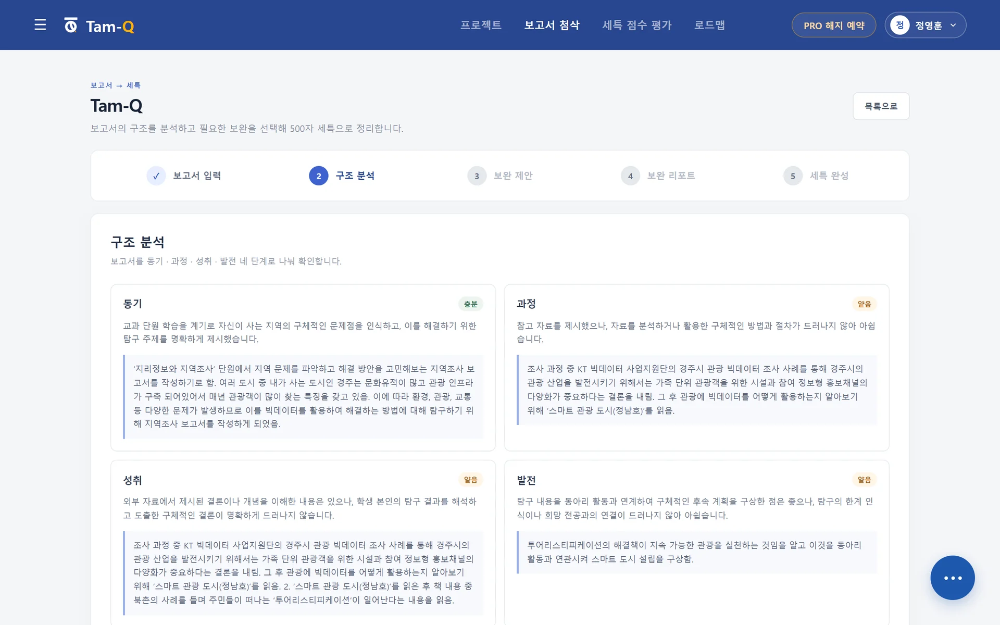
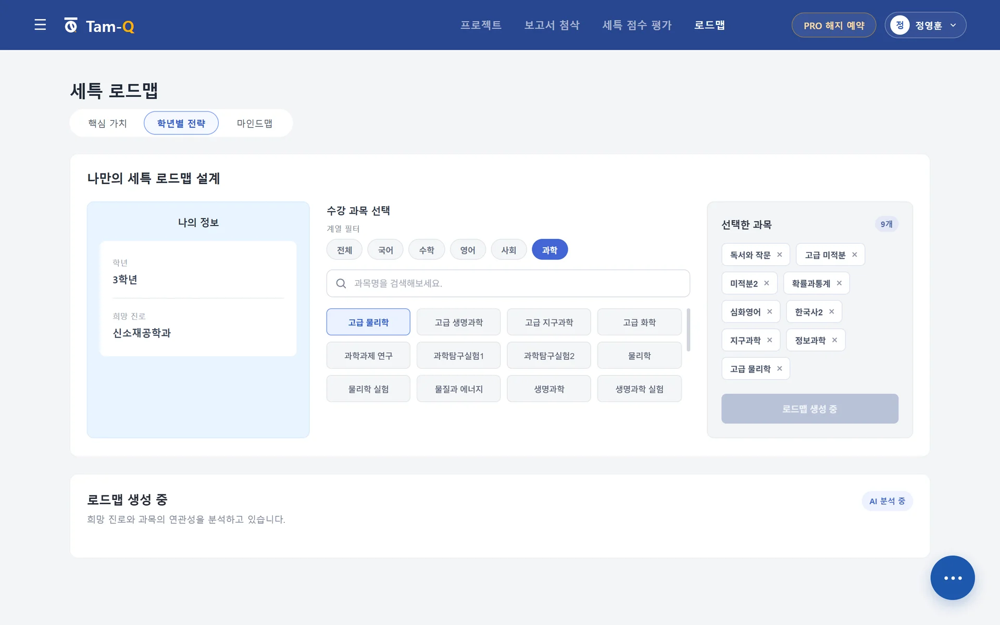

보고서 첨삭
어디를 고칠지,
문장 단위로.
작성한 탐구보고서를 평가 기준에 따라 분석하고, 원문 위에 구체적인 수정 방향을 표시합니다.
- 동기·과정·성취·발전 구조 분석
- 논리 공백과 보완 참고자료 제안
- 원문에 바로 적용할 수 있는 수정 예시

한 번의 관심이 탐구보고서가 되고, 그 과정이 세특과 입시의 근거로 이어지도록 TAM-Q가 모든 단계를 연결합니다.
질문 하나가 주제가 되고, 자료와 보고서를 거쳐 세특에 남고, 결국 입시의 기록이 됩니다. TAM-Q는 결과만 대신 써주는 도구가 아닙니다.
2022 개정 교육과정
과목과 단원을 고르면, 교과 개념과 진로 관심사를 연결한 탐구 주제가 바로 나옵니다. 오른쪽에서 직접 눌러 보세요.
보고서 첨삭
작성한 탐구보고서를 평가 기준에 따라 분석하고, 원문 위에 구체적인 수정 방향을 표시합니다.

세특 점수 평가
지금 내 세특이
어디쯤인지, 숫자로.
학업·진로·공동체 역량별로 진단하고, 목표 대학군 참고 점수와 비교해 강점과 보완할 점을 보여 줍니다.

점수는 실제 서비스 화면의 예시입니다.
진로 로드맵
핵심 가치와 희망 진로를 바탕으로 선택 과목, 학년별 탐구 활동, 학업 전략을 하나의 로드맵으로 연결합니다.

탐구 프로젝트
하나의 프로젝트 안에서 다시 입력하지 않아도 맥락이 이어집니다.
교육과정·과목·단원을 고르면 교과 개념과 진로를 연결한 탐구 주제를 추천합니다.
선택한 주제에 바로 쓸 수 있는 참고자료를 찾아 연결합니다.
동기·과정·성취·발전의 흐름으로 탐구보고서를 씁니다.
탐구 과정을 세부능력 및 특기사항 문장으로 정리합니다.
완성한 보고서와 세특을 PDF로 내보냅니다.
주제 고민하던 일주일이 하루로 줄었어요. 단원만 고르니까 그날 자료 조사까지 끝냈어요.
첨삭이 ‘좋아요’로 끝나지 않고, 어느 문장을 왜 고쳐야 하는지 짚어 줬어요.
진로에서 거꾸로 과목을 짜 주니, 아이와 이야기할 거리가 생겼어요.
세특 평가만 필요하다면 이용권, 탐구 전 과정을 쓰려면 Pro를 고르세요.
10회 10,000원 · 20회 18,000원
한 번 결제로 6개월 · 월 19,833원꼴
추천인 코드가 있다면 1개월 구독에 한해 6개월간 월 19,000원
결제 전 환불 정책을 확인해 주세요. 서비스를 1회 이상 이용한 뒤에는 환불되지 않습니다.